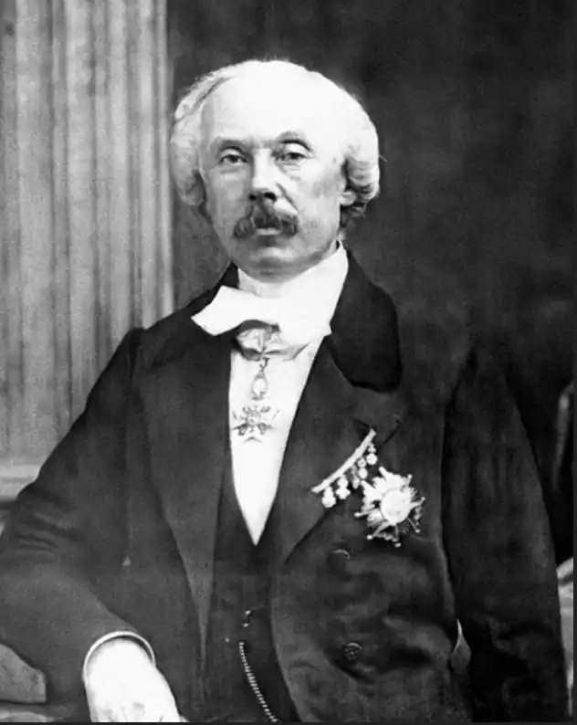

Адольф Філіпп д'Еннері (17 червня 1811, Париж — 26 грудня 1899, Париж) — французький драматург єврейського походження.
Один з найпопулярніших авторів мелодрами середини і 2-ї пол. XIX ст., також писав комедії і водевілі.
Протягом 1831—1887 років написав (у співавторстві або поодиноко) більше двох сотень драматичних творів, серед яких п'єси різних жанрів, лібрето для опер і балетів. Його твори йшли в театрах 19 сторіччя у Франції і за її межами. Серед його творів: Émile, ou le fils d'un pair de France, п'єса, спільно з Ш. Денуайє (Charles Desnoyer), 1831 "Вузькі черевики, або В'язниця св. Крепена" (фр. Les petits souliers, ou La prison de St. Crepin), водевіль в 1 д.; спільно з Е. Гранже. "Будинок на Петербурзькій стороні, або Мистецтво не платити за квартиру". (L'art de ne pas payer son terme). Водевіль в 1 дію. "Мадам і месьє Піншон" (Madam et monsieur Pinchon), комедія-водевіль в 1 д.; спільно з Ж. Баяром і Ф. Дюмануара. "Каспар Гаузер" (Gaspard), драма в 4 д., Спільно з О. Аніс-Буржуа. "Материнське благословення" (фр. La Grâce de Dieu), спільно з Г. Лемуаном (Gustave Lemoine), драма в 5 д. З куплетами; п'єса неодноразово ставилася в різних театрах. "Паризькі цигани", 1843 "Сім замків диявола", феєрія; 1844 "Графиня Клара д'Обервіль" (La dame de St. Tropez); драма в 5 отд., спільно з О. Аніс-Буржуа. "Стаття 213, або Чоловік зобов'язаний захищати" (L'article 213, ou Le mari doit protection). Комедія в 1 д.; в співавторстві з Г. Лемуаном (Gustave Lemoine). "Життя подвійно" (La vie en partie double), жарт-водевіль в 1 дії, спільно з О. Аніс-Буржуа і Е. Брізбарром. "Маленький П'єр" (Le petit Pierre). Ком. в 1 д.; в співавторстві з Ш.-А. Декурсель. "Дон Сезар де Базан" (Don César de Bazan), (інша назва "Іспанська дворянин"), спільно з Ф.Дюмануаром (переробка драми В.Гюго "Рюи Блаз"), 1844; багатьма джерелами відзначається як кращий твір автора, яке увійшло в світову класику. "Дитячий бал" (Le bal d'enfants), водевіль в 1 дії; спільно з Ф. Дюмануара. "Марі-Жанна, або Жінка з народу", спільно з М.Дорваль, 1845 "Хатина дядька Тома" (La Case d'Oncle Tom), спільно з М.Дорваль за однойменним романом Г. Бічер-Стоу, 1853 "Якби я був королем" (Si j'étais roi), лібрето опери, спільно з Ж.-А.Брезілем, музика А.Адана 1852 "Погонич мулів з Толедо" (Le Muletier de Tolède), лібрето опери, спільно з Клервілем, музика А.Адана, 1854 "Ноемі" (Noemie). Кому.-вод.; в співавторстві з Клеманом. "Дитячий лікар". Драма в 5 д.; в співавторстві з О. Аніс-Буржуа. "Наклеп, або Підступність і кохання". Драма в 5 д., 6 к. П'єса ставилася в Росії в переробці І. М. Нікуліна "Жермен". Драма в 5 д., 8 к.; в співавторстві з Е. крем'є; "Божевільний від любові" (Le fou par amour). Драма в 5 д., 7 к.; в співавторстві з О. Аніс-Буржуа. "Сліпий". Драма в 5 д.; в співавторстві з О. Аніс-Буржуа. "Старий капрал". Драма в 5 д.; в співавторстві з Ф. Дюмануара. "Перший день щастя" (Le Premier Jour de bonheur), лібрето опери, музика Обера, 1868 "Мрія любові" (Reve d'amour), лібрето опери, 1869 "Дві сироти" (les Deux Orphelines), драма в 5 актах; в співавторстві з Е.Кормоном; théâtre de la Porte-Saint-Martin, 20 січня 1874; п'єса неодноразово ставилася в багатьох театрах.